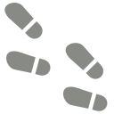
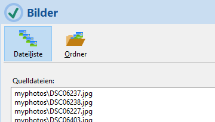
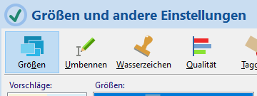
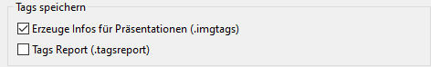
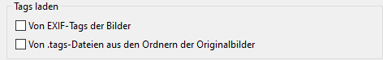

Übersicht
ImageResize 4.2 ist eine App zur Größenänderung von JPEG- und PNG-Bildern (auch Skalierung oder Resampling genannt). Sie kann viele Bilder verarbeiten und daraus Präsentationen (Web-Gallerien) erzeugen.
Inhalt
ÜbersichtQuelldateien
Zielgrößen
Zielordner
Umbenennen und Mischen
Wasserzeichen
Qualität
Taggen
Präsentation
Öffnen und Speichern
Einstellungen
Kommandozeilen-Parameter
Wasserzeichen-Editor
Vorlagen-Prozessor
Listen verfügbarer Platzhalter
Liste verfügbarer Funktionen
Fähigkeiten
- Skalieren von JPEG- und PNG-Bildern
- Parallelverarbeitung vieler Bilder
- Skalieren jedes Bildes in mehrere Größen
- Vergrößern und verkleinern
- Schärfen der erzeugten Bilder
- Erzeugen verschiedener Präsentationen (für den Web-Browser)
- Erstellung eigener Präsentations-Vorlagen
- Auswahl der Interpolation für gute Ergebnisse
- Optionales Wasserzeichen
- EXIF Tags (Titel, Timestamp, Copyright)
- GUI-, CLI- und API-Schnittstelle
- Kontrollierte Dateiumbenennung
- Zufälliges Mischen der Bilder
- Speichern der Einstellungen in Projektdateien
Was es nicht kann
- Ausschnitte, Bildverzerrung und andere Transformationen
- Formatkonvertierung (JPEG bleibt JPEG und PNG bleibt PNG)
- Alle EXIF tags übertragen
Übersicht
Das Programm benötigt mindestens die folgenden 3 Angaben:
- Die Liste von Bilddateien oder einen Quellordner mit Dateifilter
 - Eine oder mehrere Zielgrößen
 - Den Zielordner
Drücken Sie am Ende um die Verarbeitung zu starten.
Bilder
ImageResize kann viele Bilddateien verarbeiten. Die Liste der Bilder besteht aus Pfad/Dateiname und kann
- manuell bearbeitet werden
- im Auswahldialog ausgewählt werden
 mit <STRG> und <UMSCHALT>
mit <STRG> und <UMSCHALT> - durch Ziehen von Bilddateien aus dem Windows-Explorer ergänzt werden
- durch Angabe eines Quellordners mit Dateifilter angegeben werden
- relative Pfadangaben beinhalten
Die Liste darf JPEG- und PNG-Dateien enthalten. Die Dateinamen können beibehalten oder umbenannt werden. Relative Pfade beziehen sich auf den Speicherort der Projektdatei (.irs) oder auf das letzte aktuelle Verzeichnis.
Größen
Eine Größe in Pixeln bezieht sich auf die längere Seite des Bildes.
ImageResize kann mehrere Größen für jedes Bild erzeugen. Geben Sie eine Liste von Größen ein, indem Sie die Größe im Feld "Größe" eingeben oder auswählen und "Zufügen" drücken. Sie können alle Größen angeben, die größer als 0 sind.
Sie können Größen ihrer Liste abwählen, sodass sie zwar in der Liste bleiben, aber nicht berücksichtigt werden. Klicken Sie dazu die Checkbox oder drücken Sie die <LEER>-Taste.
Die farbige Hinterlegung der Größen sind nur ein Hinweis auf die übliche Verwendung:
- THUMBNAIL für kleine Vorschaubilder
- DOCUMENT für Bilder die in Texten eingebettet werden sollen
- SCREEN für Bilder die auf dem Bildschirm voll dargestellt werden sollen
Die gewählten Größen erhalten Bezeichner, damit sie über einen Namen durch den Platzhalter ${SIZENAME} verwendet werden können. Der Platzhalter kann an folgenden Stellen verwendet werden:
- Im Zielordner, z.B.: "img${SIZENAME}"
- In der Dateinamenvorlage bei Umbenennungen, z.B.: "img${INDEX.ifmt(1,auto)}${SIZENAME}.${FILEEXT}"
- In den Vorlagen (Templates) der Präsentationen
Zielordner
Ein Zielordner muss angegeben werden. Sie können ihn direkt eintippen oder mit der Schaltfläche  auswählen.
auswählen.
Um Konflikte der Zielnamen zu vermeiden, wenn mehrere Zielgrößen angegeben werden, können Sie entweder mit Umbenennen verschiedene Dateinamen erzeugen, oder indem jede Größe einen eigenen Zielordner enthält. Dazu muss der Name des Zielordners den Platzhalter ${SIZE} oder ${SIZENAME} enthalten.
Umbenennen und Mischen
Es gibt verschiedene Gründe die erzeugten Dateien umzubenennen. Z.B. wenn Sie nicht für jede Größe einen eigenen Ordner erzeugen möchten, sondern alle Dateien in einem gemeinsamen Ordner.
Klicken Sie Anwenden und wählen Sie eine der möglichen Strategien:
Strategie "Einfach"
Die einfache Dateinamenvorlage erzeugt Namen wie diesen: img085.jpg. Die Datei-Nummerierung beginnt bei 1 und enthält nicht die Größe (in Pixeln). Dann ist es erforderlich für jede Größe einen eigenes Verzeichnis zu erzeugen. Dazu fügen Sie in die Vorlage des Zielordners den Platzhalter ${SIZE} oder ${SIZENAME} ein.
Die Dateinamen-Vorlage ist im einfachsten Falle img${INDEX.ifmt(1,3)}.${FILEEXT}. Der INDEX ist die 0-basierte laufende Nummer der Quelldatei in der Liste. Die Zahlen 1 und 3 hinter dem Schlüsselwort INDEX bedeuten, dass der Index bei 1 beginnt und 3 Ziffern mit führenden Nullen enthalten wird.
Strategie "Erweitert"
Die Dateinamen-Vorlage in diesem Falle ist z.B. "img${INDEX.ifmt(1,3)}_${SIZE}.${FILEEXT}", um alle Dateien ohne Namenskonflikt im selben Verzeichnis zu erzeugen. Sie erzeugt einen Dateinamen wie img085_1920.jpg. Der Dateinamenskonflikt wird vermieden durch Verwendung des ${SIZE}-Platzhalters.
Strategie "Angepasst"
Um das Programm einen geeigneten Dateinamen erzeugen zu lassen, können Sie hier eine eigene Vorlage angeben. Die Vorlage enthält Platzhalter für spezielle Werte, die wärend der Verarbeitung erzeugt und eingefügt werden.
Beispiele für gültige Vorlagen im Falle, wo die resultierenden Dateinamen für verschiedene Größen im gemeinsamen Verzeichnis keinen Konflikt erzeugen, könnten so aussehen:
"img${INDEX.ifmt(1,3)}_${SIZE}.${FILEEXT}"
ergibt z.B. "img012_1920.jpg"
"${FILETITLE}_${SIZE}.${FILEEXT}"
ergibt z.B. "DSC3240_1920.jpg"
"${FILETITLE}_${SIZENAME}.${FILEEXT}"
ergibt z.B. "DSC3240_SCREEN.jpg"
Die verfügbaren Platzhalter im Zusammenhang mit Umbenennung finden Sie in dieser Tabelle und die verfügbaren Funktionen hier.
Mischen
Mischen bedeutet, dass die lexikalische Reihenfolge der Zieldateinamen zufällig ist. Dazu ist die automatische Umbenennung der Zieldateien nötig.
ImageResize mischt zunächst die Reihenfolge der Bilder bevor es die resampelten Bilder erzeugt. Das hat nur Sinn, wenn dabei die Zieldateinamen den Index des Bildes am Beginn des variablen Teiles des Namens enthält, damit die lexikalische Reihenfolge aufsteigend ist. Eine geeignete Vorlage für den Zielnamen ist z.B. "img${INDEX.ifmt(1,3)}.${FILEEXT}".
Der Parameter Saat kontrolliert die zufällige Abfolge. Eine Saat von 0 ("Zufällig") wird jedesmal eine andere Abfolge erzeugen, wenn die Verarbeitung gestartet wird. Jeder andere konstante Wert wird die Abfolge in der selben Art mischen, solange die Länge der Bildliste sich nicht ändert.
 Wasserzeichen
Wasserzeichen
Ein Wasserzeichen ist ein halbdurchlässiges kleines Bild, das dem Zielbild z.B. ein Copyright zufügt. Das Bild muss im PNG-Format vorliegen und kann einen Alpha-Channel (Transparenz) haben. Wenn das Bild gedruckt wird, kann eine zusätzliche Deckkraft angegeben werden. 20 bis 30 Prozent ist gut für eine schwach sichtbare Erscheinung, ab 50 Prozent wird das Wasserbild deutlich sichtbar.
Anwenden
Wählen Sie diese Option, um das Wasserbild zu aktivieren.
Dateiname
Geben Sie einen Dateinamen einer PNG-Datei an, deren Bild in jedes Zielbild hineinskaliert wird.
Normalerweise genügt es für alle Zielgrößen eine gemeinsame Datei anzugeben, weil die Größe für jedes Bild angepasst wird. Dafür wird ein Wasserzeichenbild in guter Auflösung einmalig für alle erzeugt.
Um für jede Zielgröße ein anderes Wasserbild festlegen zu können, müssen Sie im Namen der Wasserbilddatei den Platzhalter ${SIZE} angeben. ImageResize erwartet in diesem Falle ein Wasserbild für jede Größe, deren Name der Vorlage entspricht, also die Größe enthält.
Sie können Wasserbilddateien mit jedem Programm erzeugen welches das PNG-Format unterstützt, z.B:
- Inkscape - ein freier Vektorgraphik-Editor
- Gimp - ein freies Rastergraphikprogramm
- Greenfish Icon Editor - ein graphischer Rasterbild-Editor
- mit dem eingebauten Wasserzeichen-Editor
Sie können dabei Transparenz verwenden, aber beachten Sie, dass ImageResize zusätzlich eine Deckkraft darüberlegen kann.
Deckkraft
Eine Deckkraft von 0 Prozent lässt das Wasserbild verschwinden, 100 Prozent macht es voll deckend.
| 10% | 20% |  | |
| 30% |  |
40% |  |
| 50% |  |
60% |  |
| 70% |  |
80% |  |
| 90% |  |
100% |  |
Größe
Die Größe wird in Prozent der verfügbaren Breite angegeben.
1 Prozent ist die kleinste und 100 Prozent entspricht der vollen Breite.
Horizontale Position
Die Position wird in Prozent des verfügbaren Raumes angegeben und von links oben gezählt.
0 Prozent ist linksbündig, 50 Prozent ist mittig und 100 Prozent ist rechtsbündig.
Vertikale Position
0 Prozent ist ganz oben, 50 Prozent ist vertikal zentriert, 100 Prozent ist ganz unten.
Qualität
Die Qualität des Ergebnisses hängt von diesen Einstellungen ab. Sie können den Kompressionsgrad für JPEG- und für PNG-Formate und den Resampling-Algorithmus (Interpolation) steuern.
Interpolation

Resampling oder Skalierung bedeutet das Aufbauen eines neuen Bildes mit kleineren oder größeren Abmessungen bei gleichem Seitenverhältnis. Dazu müssen die Farben der Pixel des Zielbildes durch Interpolation ermittelt werden. Im einfachsten Falle - Stretch (ohne Interpolation) - bekommt das Pixel den Farbwert des ihm nächsten Pixels des Originales. Dies führt zu Informations- und Qualitätsverlust beim Verkleinern und zu schlechter Qualität beim Vergrößern.
Es stehen 11 Resampling-Algorithmen zur Verfügung. Ausser dem einfachen Stretch sind die Algorithmen Interpolationen. Je nach Skalierung wirken sie sich unterschiedlich aus.
Die Voreinstellung ist "Beste Qualität". Dabei wird "Mitchell" für Herunter- und "Spline" für Heraufskalieren gewählt.
Schauen Sie sich die Wirkung verschiedener Interpolationen an.
JPEG Qualität

JPEG ist ein verlustbehaftetes Verfahren. Eine höhere Qualität resultiert in größeren Dateien. Bei JPEG ist 75 bis 95 Prozent eine gute Wahl. Noch 50% hat eine erstaunlich gute Qualität bei kleinen Dateien. Wenn Sie Web-Gallerien erzeugen, und die Größe auf die Bildschirmgröße beschränken (1920px) erhalten Sie bei 50% Qualität/Kompression optimale Ladezeiten bei akzeptabler Qualität.
PNG Kompression

Das PNG-Format komprimiert immer verlustfrei, ergibt aber bei Naturbildern eine geringe Kompression, daher ist es hauptsächlich bei künstlichen Bildern sinnvoll, wo es große einfarbige Flächen gibt.
Es sind 4 Kompressionsgrade möglich:
- Voreinstellung - normale Kompression
- Keine
- Schnellste - geringe und schnellste Kompression
- Maximal - größte und langsamste Kompression
Schärfen
Das resampelte Bild wir anschließend geschärft.
Es gibt 4 vordefinierte Schärfungsbeträge:
- Voreinstellung (100) - gute Schärfung
- Keine (0)
- Leicht (50) - leicht geschärft
- Stark (200) - starke Schärfung
Statt einen der vordefinierten Werte können Sie irgendeinen Wert größer oder gleich 0 eingeben. 100 ist eine gute Schärfung für natürliche Bilder, die nicht bereits durch eine vorherige Verarbeitung geschärft wurden.


Taggen
Allgemeines
Sie könne den erzeugten Bildern gewisse Metainformationen zufügen. Normalerweise werden solche Metainformationen bei Fotos (z.B. JPEG) im EXIF-Format innerhalb der Datei gespeichert. Die modernen Fotoapparate legen damit viele technische Informationen ab. Die wichtigsten Metainformationen für ImageResize sind Titel, Timestamp und Copyright.
Taggen (engl. "anhängen") bedeutet bei ImageResize, dass Sie den mit ImageResize erzeugten Bildern bestimmte dieser Informationen mitgeben. Es wird aus zwei Gründen von ImageResize unterstützt:
- Zum Erhalt Ihres Copyrights bei der Weitergabe von Bildern
- Als Grundlage für die Präsentation als private oder öffentliche Webseite
Es gibt in ImageResize folgende Strategien solche Tags weiterzugeben:
- Als EXIF-Tags innerhalb von JPEG-Bildern
- Als .imgtags-Datei, die jedem Zielverzeichnis, bzw. jeder Bildgröße automatisch beigefügt wird
Es gibt folgende Quellen für Tags:
- Die EXIF-Tags der originalen Dateien
- .tags-Dateien, die Sie den Originalbildern beifügen können
EXIF-Tags
Es werden derzeit von ImageResize leider nur bestimmte EXIF-Tags unterstützt:
-
Titel
Eine kurze Beschreibung des Bildinhaltes, so wie er von einem Anzeigeprogramm wiedergegeben würde. Der Titel ist als EXIF Tag ImageDescription abgelegt. -
Zeitstempel
Das Aufnahmedatum eines Fotos. -
Copyright
Das Copyright-Tag besteht mindestens aus den Teilen Copyright-Zeichen © od. (c), dem Jahr und dem Urheber. Z.B. "© 2024 Mogli Maisenkeyser, www.atomek.de". Hängen Sie eine Webdomäne dran, um keinen Zweifel zu lassen.
Im Einstellungen-Dialog Taggen können Sie auswählen, welche der genannten Tags in die Zielbilder übernommen werden sollen. Dabei können die Copyright-Einträge für alle Bilder mit einer neuen Zeichenkette überschrieben werden.
Vorbereitung zum Taggen ihrer Bilder
Um die erzeugten Kopien zu taggen gibt es 2 Möglichkeiten:
1. Die Originaldateien mit EXIF-Metainformationen erweitern
Das geht nur bei JPEG-, nicht aber bei PNG-Bildern. Sie können dazu
- im Eigenschaften-Dialog des Windows-Explorers im Reiter "Details" die Tags Titel, Erfassungsdatum und Copyright in ändern.
- ein Programm wie ExifTool oder RawTherapee verwenden.
2. Vorbereiten der Tags in .tags-Dateien
Mit einem beliebigem einfachen Textbearbeitungsprogramm, wie dem Windows-Editor (notepad.exe), schreiben Sie eine Liste der Tags und speichern die Datei UTF-8-kodiert im Verzeichnis mit den Originaldateien unter dem Namen ".tags". Wenn Sie mehrere Verzeichnisse mit Bildern haben, legen Sie in jedes Verzeichnis eine .tags-Datei.
Eine .tags-Datei ist eine UTF-8 codierte CSV-Datei (kommaseparierte Liste). Die Titelzeile enthält die Namen der Spalten (Filename, Title, Timestamp, Copyright). Darunter existiert für jedes Bild eine Zeile mit den Feldern entsprechend der Header-Zeile.
Filename, Title, Copyright DSC04262.jpg, Labore Sanitas, (c) 2023 ATOMEK DSC04264.jpg, Leuchtturm am Hafen, (c) 2023 ATOMEK DSC04288.jpg, "Heimfahrt durchs Watt, herrlich", (c) 2023 ATOMEK
Die erste Spalte muss "Filename" heißen und enthält den Namen der Datei ohne den Pfad. Die Reihenfolge der anderen Spalten und die Reihenfolge der Zeilen sind unbedeutend. Sie können auch eigene Felder einführen, die in der Präsentation verwendet werden. Wenn ein Feld Kommata oder führende Leerzeichen enthalten soll, setzen Sie den Wert in doppelte Anführungszeichen. Die letzten Felder eine Zeile können fehlen - es müssen keine Kommata mit leeren Werten folgen. Der Asterisk * steht für einen Wert, der von der vorherigen Zeile übernommen werden soll.
Wenn Sie mehrere .tags-Dateien in verschiedenen Verzeichnissen anlegen, müssen diese nicht gleich strukturiert sein. Sie können unterschiedliche Spaltennamen haben. Wiederholen sich Werte entsprechend dem Wert der vorhergehenden Zeile, geben Sie * als Wert an.
Einstellungen zum Taggen
Tags speichern
Hier bestimmen Sie, ob die gefundenen Tags in .imgtags-Dateien der Zielordner gespeichert werden sollen. Die .imgtags-Dateien sind klein im Vergleich zu den Bilddateien.
.imgtags-Dateien sind eine Voraussetzung für die Erzeugung einer Präsentation und werden automatisch erzeugt.
Tags laden
Wenn Sie Tags verarbeiten möchten, müssen Sie angeben woher diese kommen sollen. Sie können entweder aus den EXIF-Informationen der JPEGs stammen oder aus ihren .tags-Dateien oder aus beidem. Wenn sie aus beidem stammen haben die .tags-Dateien Vorrang. Ist z.B. das Copyright-Tag in den EXIF-Informationen des Fotos enthalten und außerdem existiert auch eine Copyright-Spalte in der .tags-Datei, dann wird der Wert aus der .tags-Datei genommen.
Wenn sie Tags speichern wollen aber keine Tags-Quelle angeben, wird ImageResize selbsttätig nach .tags-Dateien suchen, auch wenn Sie dies nicht ausdrücklich angegeben haben.
EXIF Tagging

Normalerweise enthalten die erzeugten Bilder keinerlei Meta-Informationen aus den Originaldateien. Hier wählen Sie aus, welche Tags in die erzeugten Bilder als EXIF-Tags übernommen werden sollen. Der Titel wird im EXIF-Feld "ImageDescription" abgelegt. Sie können das Copyright-Tag für alle erzeugten Bilder überschreiben.
Wenn Sie als Quelle sowohl EXIF als auch .tags-Dateien angegeben haben (Tags laden), haben die .tags-Dateien Vorrang. Die EXIF-Metainformationen der Originaldateien werden dann nur verwendet, wenn die .tags-Dateien für die betreffende Datei keine Felder definiert haben.
Präsentation
Die wichtigste Neuerung der Version 4.0 ist die Einführung der Präsentation ihrer Bilder. Die Präsentation ist eine Web-Gallerie, die Sie mit ihrem Webbrowser betrachten können.
Erzeugung
Angenommen Sie haben zuvor ihre Bilder auf eine geeignete Größe skaliert, wählen Sie den Dialog Präsentationen... .
- wählen Sie eine der verfügbaren Präsentationen, z.B. "Info 1.0"
- öffnen Sie die betreffende .imgtags-Datei mit den Meta-Informationen
- geben Sie bei den Einstellungen den Titel der Gallerie und die anderen Angaben ein
- Klicken Sie Erzeugen

- Schauen Sie sich die erzeugte Präsentation mit an

Wenn Sie mehrfach "Anzeigen" klicken, wird ihr Browser möglicherweise jedesmal ein neues Tab öffnen. Sie können statt dessen die aktuell im Browser angezeigte Präsentation in ihrem Browser neu laden.
Wenn Sie den Dialog mit Ok schließen, werden die Einstellungen ins aktuelle Projekt übernommen.
Öffnen und Speichern von Projektdateien

Sie können die aktuellen Einstellungen als Projekt mit der Erweiterung .irs speichern. Das sind einfache textbasierte INI-Dateien.
Beim Öffnen einer Projektdatei wird das aktuelle Verzeichnis auf das Verzeichnis der Projektdatei gesetzt. Dadurch können Sie Pfadangaben relativ angeben und das Projekt mit den Bildern verschiebbar machen.
Sie können einstellen, wie weit Sie ImageResize auf zu speichernde Einstellungen hinweist. Im bequemsten Falle speichert ImageResize stets automatisch die aktuellen Einstellungen. Sie können dieses Verhalten im Dialog Einstellungen steuern.
Wenn Einstellungen geändert werden, wird dies durch einen roten Punkt im Speichern-Symbol ausgedrückt.
Einstellungen
 Verarbeitung
Verarbeitung
- Threads – ImageResize kann die Rechenleistung des Systems durch Multithreading besser nutzen.
Single bedeutet, dass nur ein Kern verwendet wird – die Verarbeitung wird entsprechend langsam. Sie können bis zur Gesamtzahl der verfügbaren Kerne gehen (=Maximum). Dadurch kann sich die Verarbeitungsgeschwindigkeit vervielfachen, z.B. 5-fach mit 12 Hyperthreads statt nur einem. - Bei Fehler anhalten – Wenn bei der Verarbeitung eines Bildes ein Fehler auftritt, wird die Verarbeitung gestoppt, sobald ein Fehler auftritt. Bei Verwendung mehrerer Threads kann dies mit Verzögerung passieren.
In Systemen mit Hyperthreading ist die Anzahl der virtuellen Kerne höher als die Anzahl der physischen Kerne. Wenn Sie 12 Kerne haben, von denen nur 6 physisch sind, bedeutet dies, dass 12 Threads verwendet werden Im Vergleich zu 6 Threads erhöht sich die Verarbeitungsgeschwindigkeit nur um rund 8 Prozent.
Speichern
- Verhalten
Diese Einstellung steuert das Verhalten der Anwendung Datenverlust zu verhindern.
- Standard – Abfragen zum Speichern ohne automatisches Speichern der Einstellungen in einer versteckten Datei
- Komfortabel – Keine Rückfragen, Sicherheit durch automatisches Speichern
- Neurotisch - Rückfragen zum Speichern, zusätzlich automatisches Speichern
- Chuck Norris – Keine Fragen, keine Sicherheitsgurte
- Relative Pfade beim Speichern sorgt dafür, dass alle Pfadinformationen relativ zur Projektdatei gespeichert werden. Dadurch können Projektdateien mit ihren Bildern verschoben werden, ohne dass die Pfade angepasst werden müssen.
Kommandozeilen-Parameter
Diese beziehen sich auf die graphische Anwendung ImageResize.exe. Es gibt auch das Kommandozeilenprogramm imgres.exe mit wesentlich mehr Optionen.
filename.irs
Sie können ImageResize eine .irs-Datei beim Start laden lassen, indem Sie den Dateinamen als Kommandozeilen-Parameter übergeben. Dadurch kann die Anwendung ImageResize auch in der Systemsteuerung mit der Erweiterung .irs verknüpft werden.
-A oder -AUTOSTART
Lässt ImageResize die Ausführen-Schaltfläche automatisch beim Start betätigen.
-X oder -AUTOEXIT
Bewirkt ein automatisches Schließen der Anwendung nach dem Ende der Verarbeitung.
-L EN oder -LANGUAGE EN
Die Anwendung ist für die englische Sprache entwickelt, aber es gibt eine deutsche Lokalisierung, die automatisch auf deutschen Systemen angezeigt wird. Mit dem Schalter kann dieses Verhalten verhindert werden.
Um ImageResize automatisch eine Liste von Bildern resampeln zu lassen, speichern Sie zunächst eine geeignete .irs-Datei und starten dann das Programm mit diesen Kommandozeilenparametern:
C:\Programme\ImageResize\ImageResize.exe C:\mylist.irs -A -X
Wasserzeichen-Editor
Mit dem eingebauten Wasserzeichen-Editor können Sie einen Schriftzug mit ein paar nützlichen Dekorationen erzeugen.
Die Vorschau zeigt Ihnen, wie das Wasserzeichen ungefähr aussehen wird, allerdings ohne die zusätzliche Transparenz, die sie bei den Wasserzeichen-Einstellungen angeben können.
 Um einen Eindruck davon zu bekommen, wie das Wasserzeichen auf hellem oder dunklem Hintergrund wirkt, klicken sie eine dieser Schaltflächen.
Um einen Eindruck davon zu bekommen, wie das Wasserzeichen auf hellem oder dunklem Hintergrund wirkt, klicken sie eine dieser Schaltflächen.

Mit dieser Schaltfläche können Sie die Einstellungen des Dialoges als .was-Datei speichern und später wieder laden. Es wird neben der .was-Datei das erzeugte PNG-Bild des Wasserzeichens gespeichert.
Sie können Ihre aktuellen favorisierten Einstellungen ohne einen Dateinamen als Favoriten speichern und später einfach wieder abrufen.
| Text |
Geben Sie hier die Textzeile ein, die im Wasserzeichen dargestellt werden soll. Das ©-Zeichen mit
<ALT> <0> <1> <6> <9> oder mit der
 -Schaltfläche. -Schaltfläche.
|
| Font |
Wählen Sie einen Font mit der Größe in Punkten, einen Fontnamen in Anführungszeichen und optional die Stile Italic und
Bold oder wählen Sie einen Font im Dialog  aus. Die Qualität des Wasserzeichens hängt mit der Font-Größe zusammen. 12pt erzeugt ein grobpixeliges Wasserzeichen, 48pt eine genauere Abbildung. Die Fontgröße hat keinen Einfluss auf die spätere Darstellung im Bild, da deren Größe bei den Wasserzeicheneinstellungen des Hauptfensters angegeben wird. aus. Die Qualität des Wasserzeichens hängt mit der Font-Größe zusammen. 12pt erzeugt ein grobpixeliges Wasserzeichen, 48pt eine genauere Abbildung. Die Fontgröße hat keinen Einfluss auf die spätere Darstellung im Bild, da deren Größe bei den Wasserzeicheneinstellungen des Hauptfensters angegeben wird.
|
| Farbe (Font) | Wählen Sie die Zeichenfarbe (Vordergrund) aus. |
| Umriss | Die Schrift erhält einen Umriss mit der gewählten Farbe. |
| Farbe (Umriss) | Farbe des Umrisses. |
| Breite (Umriss) | Breite des Umrisses in Pixeln. |
| Schatten | Ermöglicht einen verwischten Hintergrund der Schrift, der je nach Farbe leuchtet oder wie ein Schatten wirkt. |
| Farbe (Schatten) | Wählen Sie die Farbe des verwischten Hintergrundes aus. |
| Verwischen | Dies bewirkt einen Glanz oder Schatten um die Schrift herum, um den Kontrast des Wasserbildes zum Hintergrund zu verbessern. Wählen Sie eine Breite des Glanzes oder Schattens in Pixeln aus. Die effektive Breite hängt auch von der Schriftgröße ab. |
| Qualität | Kontrolliert die Art der Erscheinung des Schattens. Probieren Sie die möglichen Einstellungen durch Normal, Disk, Corona, Precise, Fast und Box. Precise ist ein sehr dünner Schatten, wie ein Umriss. |
Ok  |
Nachdem ein Wasserzeichen definiert wurde, muss es zunächst gespeichert werden , oder zuvor aus einer Datei geladen werden. Erst dann wird Ok verfügbar. |
Abbrechen  |
Schließt den Dialog, ohne die Datei zu verwenden. |
Vorlagen-Prozessor

Der Vorlagen-Prozessor ersetzt Zeichenketten in anderen Zeichenketten. Er wird an verschiedenen Stellen des Programmes eingesetzt und kommt z.B. bei der Erzeugung von Bildern in mehreren Größen in einem gemeinsamen Verzeichnis oder bei der Erzeugung von Präsentationen zum Einsatz.
Dazu wird zunächst eine Liste von Variablen angelegt. Die wichtigsten sind INDEX, SIZE und SIZENAME. Jede Variable hat eine Zeichenkette als Wert. Der Prozessor ersetzt die Platzhalter der Variablen in einer gegebenen Text-Vorlage durch ihren Wert.
Beispiel:
Variablen: INDEX="0", SIZE="1280", SIZENAME="SCREEN"
Text-Vorlage: "C:\MyPhotos\${SIZENAME}\bild${INDEX}_${SIZE}px.jpg"
Ergebnis: "C:\MyPhotos\SCREEN\bild0_1280px.jpg"
Die Werte der Variablen sind letztlich immer Zeichenketten. Vor ihrer Auflösung können sie auch Referenzen auf andere Variablen enthalten und Funktionen. So könnte zum Beispiel eine Variable namens IMGFILENAME den Wert "img${INDEX.add(1).fmt(3)}_${SIZE}.${ORGFILENAME.ext().lower()}" enthalten. Dieser Wert enthält Referenzen auf die Variablen INDEX, SIZE und ORGFILENAME. Auf den Wert der Variablen INDEX wird die Funktion "add(1)" angewendet, die dem Wert als Ganzzahl eine 1 zuaddiert und die Funktion "fmt(3)", die die Zahl in eine 3-stellige mit führenden Nummer umwandelt. Von der Variablen ORGFILENAME wird mit der Funktion "ext()" die Dateierweiterung genommen und mit der Funktion "lower()" in Kleinbuchstaben umgewandelt.
Vor der Erzeugung jeden einzelnen Bildes werden die Variablen aktualisiert und auf Abhängigkeiten untereinander untersucht. Diese Abhängigkeiten werden vor der Ersetzung in der Text-Vorlage aufgelöst. Auflösen bedeutet dabei, dass zunächst alle Variablen, die nur von selbst unabhängigen Variablen abhängen, prozessiert werden. Damit sind diese Variablen selbst unabhängig und können wiederum in andere Variablen eingesetzt werden, die von ihnen abhängen. Dies geschieht solange, bis alle Variablen aufgelöst, d.h. unabhängig sind. Dabei werden zirkuläre (gegenseitige und indirekt gegenseitige) erkannt und als Fehler gemeldet.
Die Liste der zur Verfügung stehenden Variablen ist vom Zusammenhang abhängig und wird in den jeweiligen Zusammenhängen genannt. Es gibt die Zusammenhänge Zielverzeichnis, Zieldateinamen und Präsentation.
Die Liste der zur Verfügung stehenden Funktionen ist ebenfalls vom Zusammenhang abhängig. Funktionen wie lower() und lower() stehen überall zur Verfügung und wirken gleich. Die Wirkung der Funktion fmt(digits) hängt vom Zusammenhang ab. Im Zusammenhang mit der Umbenennung kann sie zur Erzeugung des Zielverzeichnisnamens mit dem Parameter "AUTO" verwendet werden, der die Zahl der Stellen selbsttätig anhand der zur wandelnden Bilder ermittelt. Im Zusammenhang mit dem Zielverzeichnisnamen gibt es diesen Parameter nicht.
Variablen
Variablen sind benannte Speicher mit Zeichenketten darin. Sie werden vom Vorlagen-Prozessor verwendet, um Platzhalter in den Vorlagen zu ersetzen und ein Ergebnistext zu erzeugen.
Vorlage-Prozessoren werden in verschiedenen Zusammenhängen in ImageResize eingesetzt. Welche Variablen in welchem Zusammenhang verwendet werden können ist in der Tabelle ersichtlich.
| Name | Zusamenhang | Bedeutung |
|---|---|---|
| INDEX | ||
| SIZE | ||
| SIZENAME | ||
| ORGWIDTH | ||
| ORGHEIGHT | ||
| ORGFILENAME | ||
| ORGFILESIZE | ||
| FILENAME | ||
| FILETITLE | ||
| FILEEXT | ||
| INTERPOLATION | ||
| IMGFILENAME | ||
| IMGWIDTH | ||
| IMGHEIGHT | ||
| IMGFILESIZE | ||
Funktionen
Die Tabelle zeigt Funktionen, die im Zusammenhang mit jedem Vorlagen-Prozessor verfügbar sind. Um eine Funktion auf einen Variablenwert anzuwenden ist sie wie im Beispiel anzuhängen. Um weitere Funktionen anzuwenden, können sie diese an die letzte anhängen.
${VARNAME.fnname(parameters)}
Beispiel: ${MYVAR.fna(1).fnb(2,3)}
| add(n) | Zuaddieren einer konstanten Ganzzahl, um z.B. mit 1 aus dem 0-basierten Index eine 1-basiert Nummer zu machen, oder um eine bestehende Liste mit nummerierten Bildern zu ergänzen. Der Wert darf auch negativ sein. |
| dext() | Ermittelt die Dateinamenserweiterung mit Punkt |
| ext() | Ermittelt die Dateinamenserweiterung ohne Punkt |
| ifmt(n,[m|auto]) | Formatiert eine Ganzzahl, indem der Wert n zuaddiert wird und dann mit führenden Nullen aufgefüllt wird, sodaß die Zahl m Stellen hat. "auto" bedeutet im Zusammenhang mit Dateinamen, dass die Stellenzahl aus der Gesamtzahl der Bilder ermitelt wird. m kann weggelassen werden, dann wird die auto-Formatierung verwendet. |
| fmt(d) | Zahl wird mit führenden Nullen aufgefüllt, dass das Ergebnis d Stellen hat. Im Zusammenhang mit dem INDEX kann "auto" verwendet werden. Dann wird die Zahl der Stellen aus der Zahl der Bilder ermittelt. |
| lower() | Wandelt in Kleinbuchstaben um |
| numin() | Ermittelt die in einem Text enthaltene Ganzzahl. Das kann nützlich sein, um aus dem Namen eines Fotos die Nummer des Fotos zu ermitteln, z.B. aus "DSC05023.jpg" wird "05023" gezogen. Ist keine Nummer vorhanden, wird eine leere Zeichenkette zurückgegeben. |
| slice(n:m) | Kopiert eine Teil-Zeichenkette heraus von Stelle n bis Stelle m. n kann weggelassen werden (dann Beginn mit dem ersten Zeichen), ebenso m, dann bis zum Ende der Zeichnekette. m kann einen negativen Wert haben. -4 bedeutet z.B. dass die letzten 4 Zeichen weggelassen werden. |
| title() | Ermittelt den Dateinamen ohne Pfad und Erweiterung |
| upper() | Wandelt in Großbuchstaben um |